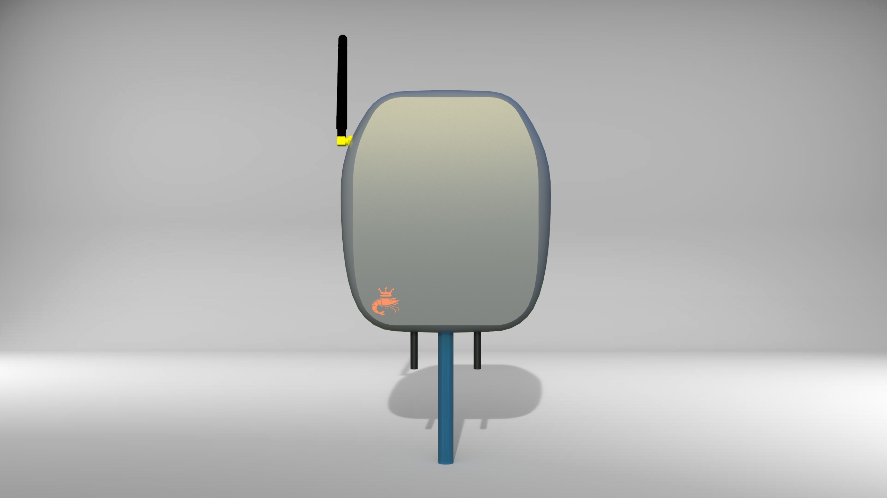
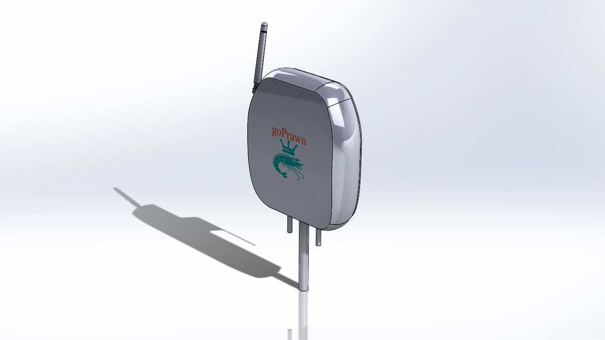
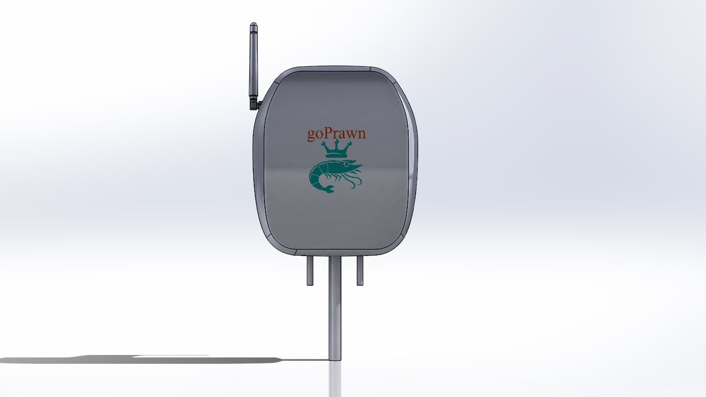
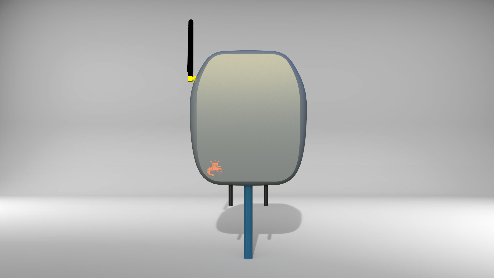
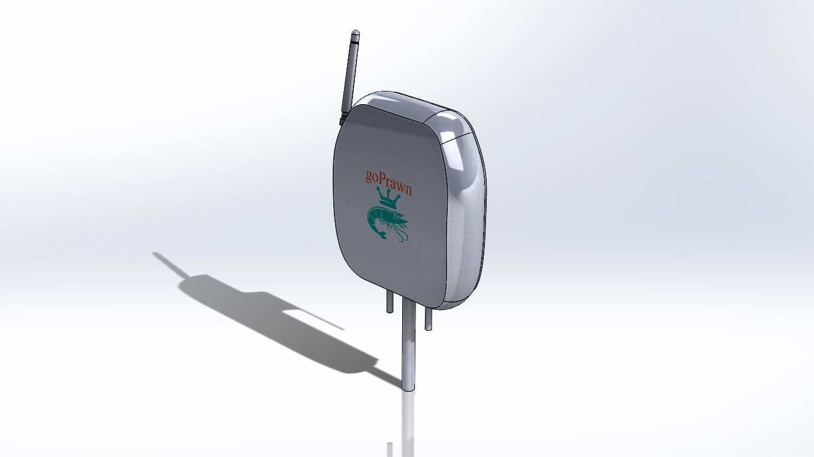
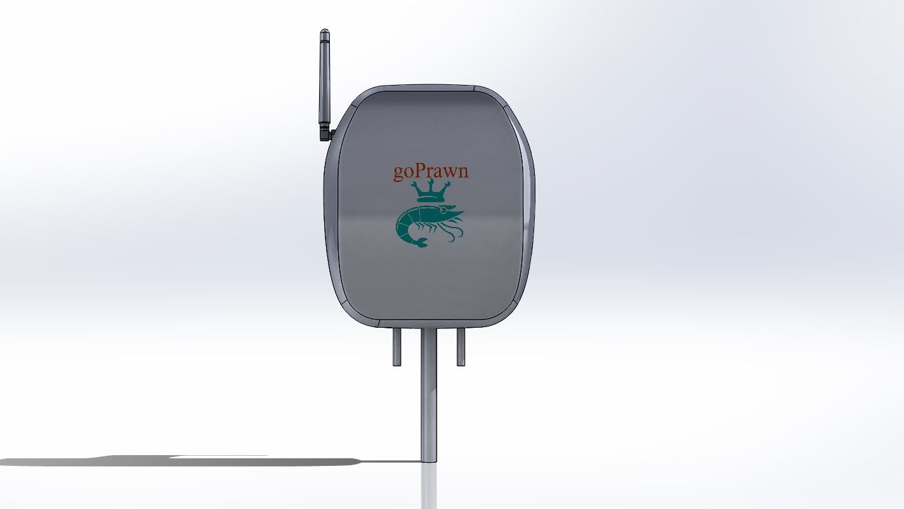

Problem
Water quality parameters are very important for the healthy growth of prawns, shrimps and fishes in aquaculture. The quality of water is not being checked regularly, so the aquatic beings get affected by diseases and sometimes get killed. Even when the water is given for testing in the water testing labs, it takes almost a week’s time to get the results, during which the condition of the aquatic living beings gets worse.
User
Aquaculture and Prawn culture farm owners.
My Role
The solution concept was a retrofittable device which can be fixed to aerators or any other types of equipment used inside aquaculture ponds. The device should enclose the pH, TDS and temperature sensor integrated with a Microcontroller and the LoRa Module.
Design Process
The sensors used had a lot of integration constraints such as their drivers and some circuitries. Accommodating those boards and wires inside the device was the main challenge. The topology of boards went on for many iterations and finally, the design ended up in a 2 layer arrangement with LoRa module in the bottom layer and other circuits on the top layer. To make it retrofittable the rear surface was made flat with 2 provisions: Fastener holes and a clip so that it can be fixed to any type of equipment inside a pond.